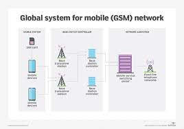
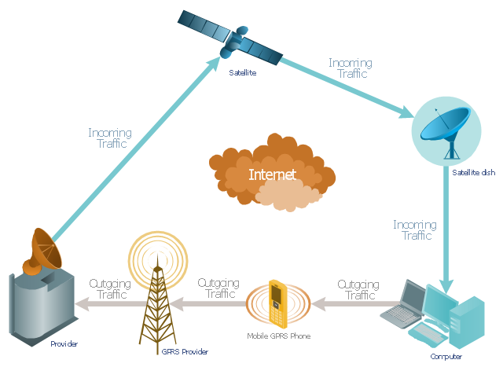

GSM AND GPRS
- Version: 2.0
- Author: Shawn Mwitia
- Created: 20 July, 2021
- Update: 28 July, 2021
What is GSM?
GSM stands for Global System for Mobile Communications. It’s a standard that specifies how 2G (second generation) cellular networks operate.
GSM standards divide networks into four distinct parts:
- Mobile Station
- Base Station Subsystem (BSS)
- Network and Switching Subsystem (NSS)
- Operations Support System (OSS)
Mobile Station:It is essentially the access point someone uses to connect to the network.
Base Station Subsystem: The BSS contains Base Transceiver Stations and a Base Station Controller. The Base Transceiver Stations allows connected devices to send and receive signals, and the Base Station Controller allows the Base Transceiver Stations to relay signals through the network, via the Network and Switching Subsystem.
Network and Switching Subsystem: The NSS originally helped facilitate connection-oriented voice calls with the Home Location Register (HLR), Authentication Center (AuC), Message Service Center (MSC), and Visitor Location Register (VLR).
Operations Support System: It is a conglomeration of processes, data, applications, and tech that allows providers to manage their network.
What is GPRS?
GPRS stands for General Packet Radio Service. It is a best-effort packet-switching protocol for wireless and cellular network communication services. It is considered best effort because all packets are given the same priority and the delivery of packets isn't guaranteed.
